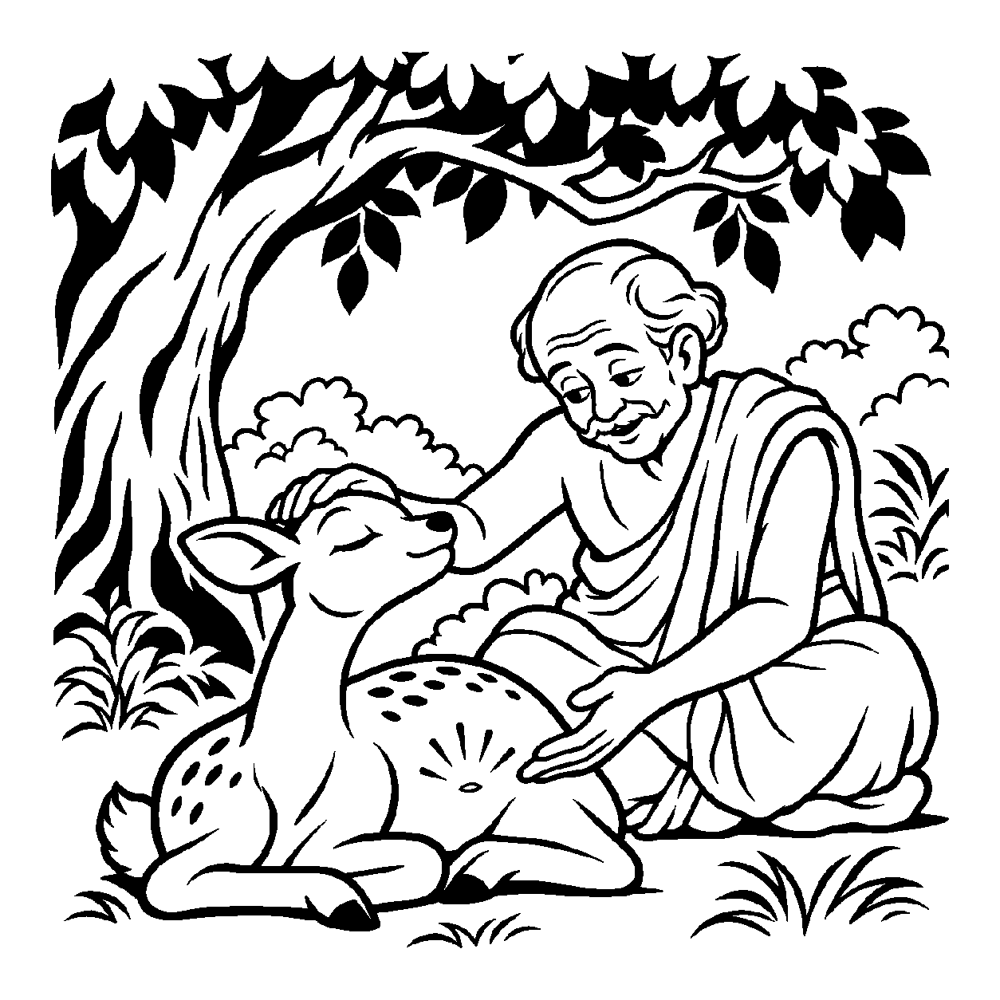

હિમાલયના ઊંચા શિખરો પરથી વહેતા ઝરણાના નિર્મળ જળને કોઈ શીતળતા શીખવતું નથી; તેને ઠંડક મેળવવા માટે કોઈ બરફના ટુકડાની કે પંખાની જરૂર પડતી નથી; શીતળ હોવું એ જળનો અનાદિસિદ્ધ, સહજ સ્વભાવ છે! તેવી જ રીતે છીપમાંથી નીકળેલા સાચા મોતીની શ્વેત આભા અને તેજ કોઈ કૃત્રિમ રંગ કે પોલિશિંગના મોહતાજ નથી; તેની ચમક તેના સ્વરૂપમાં જ વણાયેલી છે. તેવી જ રીતે આત્માનું અનંત જ્ઞાન, અતીન્દ્રિય આનંદ અને પરમ શાંતિ એ કોઈ બાહ્ય સાધનો, પુસ્તકો કે ગુરુકૃપાથી ઊભા થયેલા નથી; તે તો આત્માનો ત્રિકાળી, સ્વયંસિદ્ધ સ્વભાવ છે. કોઈ પણ બાહ્ય સંસ્કારોની અપેક્ષા રાખ્યા વિના આત્માને સ્વયં પરિપૂર્ણ જોતો દ્રષ્ટિકોણ એટલે 'સ્વભાવનય'.
આ નય સાધકને પરભાવોની ભિખારી દશામાંથી મુક્ત કરે છે. આત્માને સુખી થવા માટે કોઈ પદાર્થ, વ્યક્તિ કે પરિસ્થિતિની ભીખ માંગવાની જરૂર નથી. જેમ સૂર્યને પ્રકાશવા માટે દીવાની જરૂર નથી, તેમ ચેતના સ્વયં જ્ઞાનસ્વરૂપ છે. આ નય સહજ, અકૃત્રિમ અને સંસ્કારરહિત મુક્ત સત્તાનો અનુભવ કરાવે છે.
આ નય સાધકને પ્રયત્નોના ભારમાંથી મુક્ત કરી સહજ આત્મસ્વભાવમાં વિશ્રામ આપે છે.
જળની શીતળતા સહજ છે, મોતીની ઉજમાળ;
સ્વભાવનયથી ઓળખે, આતમ ગુણ વિશાળ.
નહિ સંસ્કારની ચાહના, પરિપૂર્ણ જે આપ;
સહજ ભાવે રમણ કરે, શમે ત્રિવિધ સંતાપ.
આત્માની મૂળ પરિપૂર્ણતાનો બોધ આપી સાધકને પરતંત્રતામાંથી મુક્ત કરે છે, જેથી ચેતના સહજ શાંતિમાં ડૂબી જાય છે.

એક ઘનઘોર અરણ્યમાં એક નાનું કસ્તુરી મૃગ ઘાસમાં દોડાદોડ કરતું હતું. વનમાં એક અદ્ભુત, અકલ્પ્ય અને દિવ્ય સુગંધ ફેલાયેલી હતી. મૃગ એ સુગંધથી પાગલ બની ગયું. તે ક્યારેક આ ઝાડીમાં મોં મારતું, ક્યારેક પેલા કાંટાળા થોર પર અથડાતું. દોડી દોડીને તેના પગ લોહીલુહાણ થઈ ગયા અને તે હાંફવા લાગ્યું. તે રડતી આંખે વિચારતું હતું: "આ અદ્ભુત સુગંધ કયા વૃક્ષમાં કે કયા ફૂલમાં છુપાયેલી છે? હું ક્યારે આ સુગંધના માલિકને શોધી શકીશ?" તેની અંદર બહારથી સુગંધ મેળવવાની અંધ અને વ્યાકુળ પિપાસા હતી.
થાકીને એક ઘટાદાર વડના છાંયડામાં બેઠેલા તે મૃગ પાસે એક વૃદ્ધ અને શાંત વનવાસી સંત આવ્યા. તેમણે મૃગના વહેતા રક્તને લૂછ્યું અને તેના પેટની નાભિ તરફ તેનો ચહેરો નમાવ્યો! જેવો મૃગનો શ્વાસ પોતાની જ નાભિ પાસે પહોંચ્યો, તે ચમકી ઊઠ્યું! જે સુગંધ માટે તે આખા વનમાં અથડાતું હતું, તે સુગંધ તો તેની પોતાની જ નાભિમાં રહેલી કસ્તુરીમાંથી પ્રગટી રહી હતી! સંતે કહ્યું: "અરે અબુધ મૃગ! સ્વભાવનયને જાણ! જે સુગંધ તું બહાર શોધે છે, તે તારા પોતાના સ્વભાવમાં જ વણાયેલી છે. તારે ક્યાંય ભટકવાની જરૂર નથી!" આ અનુભવ થતાં જ મૃગની તમામ દોડધામ શમી ગઈ. તેને પોતાની અંદર રહેલા અખૂટ ખજાનાનો સાક્ષાત્કાર થયો અને તે શાંત થઈને પરમ વિશ્રામમાં પોઢી ગયું.
જો જીવ કેવળ સ્વભાવને જ એકાંત સત્ય માની સાધના, ગુરુઉપદેશ અને તપ જેવા સંસ્કારોનો સર્વથા ત્યાગ કરી દે, તો તે અજ્ઞાનમાં જ ડૂબેલો રહે છે. એક જ પાસાને પકડી રાખવાથી વસ્તુની સમગ્ર અનેકાંતમય સત્તા વિખંડિત થાય છે અને સાધક પોતાના જ એકાંગી આગ્રહના બંધનમાં ફસાઈને સાચી શાંતિ ગુમાવી બેસે છે.
આ નય આત્માની મૂળ પરિપૂર્ણતાનો બોધ આપી સાધકને પરતંત્રતામાંથી મુક્ત કરે છે, જેથી ચેતના સહજ શાંતિમાં ડૂબી જાય છે.